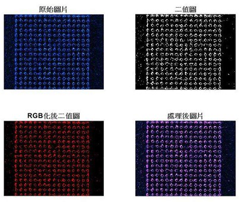

Wireless AI
UAV-RIS research using deep reinforcement learning for path planning, QoS enhancement, and intelligent decision-making.
NCKU CCE graduate · practical AI systems
I am an AI/ML engineer with a background in wireless communication research, computer vision, and embedded integration. My work ranges from UAV-RIS decision-making and lightweight vision models to RAG interview systems, autonomous vessels, and data-driven prediction.
Positioning
I enjoy work where algorithm choices meet real constraints. That includes model design and evaluation, but also sensors, microcontrollers, deployment environments, data pipelines, and the clear communication needed to make an engineering result useful.
UAV-RIS research using deep reinforcement learning for path planning, QoS enhancement, and intelligent decision-making.
Lightweight classification, detection, and segmentation models, plus image enhancement and CLIP-based feature engineering.
Random Forest, XGBoost, feature engineering, semantic retrieval, and LLM-powered interactive experiences.
Raspberry Pi, Arduino, STM32, control systems, acoustic navigation, image recognition, and electromechanical integration.
Engineering Map
Across research and side projects, the recurring pattern is consistent: understand the signal or data, build an appropriate model, integrate it into a usable system, and measure the result.
Featured Work
Use the tabs to move through four representative projects. The full project collection below is filtered by domain.
Personal Project · 2025
A lightweight shared encoder and single output head for classification, detection, and segmentation. A replay buffer supports stage-wise training while keeping performance degradation within 5% across tasks.

Personal Project · 2025
A ViT-inspired classifier built with 1.1M parameters and 5M FLOPs. Ablations on FFN size and patch resolution helped validate the efficiency of the architecture.

Academic Project · 2025
A mock-interview platform that reads resumes, adapts questions in real time, and gives structured feedback using the OpenAI API, LangChain, and vector search.

Capstone Project · 2023-2024
A Raspberry Pi and Arduino vessel integrating autonomous navigation, acoustic source guidance, image recognition, and light-guided navigation from hull construction through electromechanical wiring.

Selected Projects
Images have been remapped to their actual project. Filter by area or search by model, task, or technology.
M.S. Research · 2024-2026
Research on UAV-RIS path planning and QoS enhancement for stronger UAV performance and intelligent decision-making in wireless communication environments.
Personal Project · 2025
Shared encoder and one output head for classification, detection, and segmentation, with replay-buffer training to reduce catastrophic forgetting.

Personal Project · 2025
Dynamic convolution kernels generated by an MLP conditioned on each input, supporting RGB, RG, and R channel combinations.
Personal Project · 2025
ViT-inspired design with a compact transformer and ablation studies on FFN size and patch resolution.
Academic Project · 2025
Resume-aware interview simulation with adaptive Q&A, RAG retrieval, and feedback that accounts for company-culture profiles.

Academic Project · 2024
Combined CLIP semantic similarity, prompt similarity, and visual features with XGBoost to estimate traffic-accident risk.

Kaggle Competition · 2024
Led data preprocessing and feature engineering, then implemented and optimized Random Forest models for game prediction.
Capstone Project · 2023-2024
Designed and built a vessel with autonomous navigation, sound-source guidance, image recognition, and light-guided navigation.

Academic Project · 2022-2023
Implemented an Arduino inverted-pendulum vehicle using an LQR controller, MATLAB simulation, and swarm-based parameter tuning.

Personal Project · 2021
Worked on digit recognition, image enhancement, and MATLAB nail-edge detection to sustain accuracy under varied lighting conditions.
Personal Project · 2023
Built Python noise-reduction methods using Wiener filtering and LogMMSE, then used cross-correlation matching and speech models for voice recognition.
Research
Under Prof. Wenson Chang at the Wireless Communication and Network Lab, my M.S. research focused on UAV-RIS systems. The work explores how deep reinforcement learning can improve path planning, QoS, and intelligent decision-making in wireless communication environments.
Model aerial mobility and path-planning choices in a wireless environment.
Study reconfigurable intelligent surface support for more capable communication links.
Learn decision policies that target QoS improvement and stronger system performance.
Awards
Top 7.4%, rank 47 of 633 teams.
Top 9.2%, rank 12 of 130 for traffic accident classification.
Top 13%, rank 19 of 142 for MLB data prediction.
Top 13.9%, rank 121 of 868 in financial forecasting.
Skills